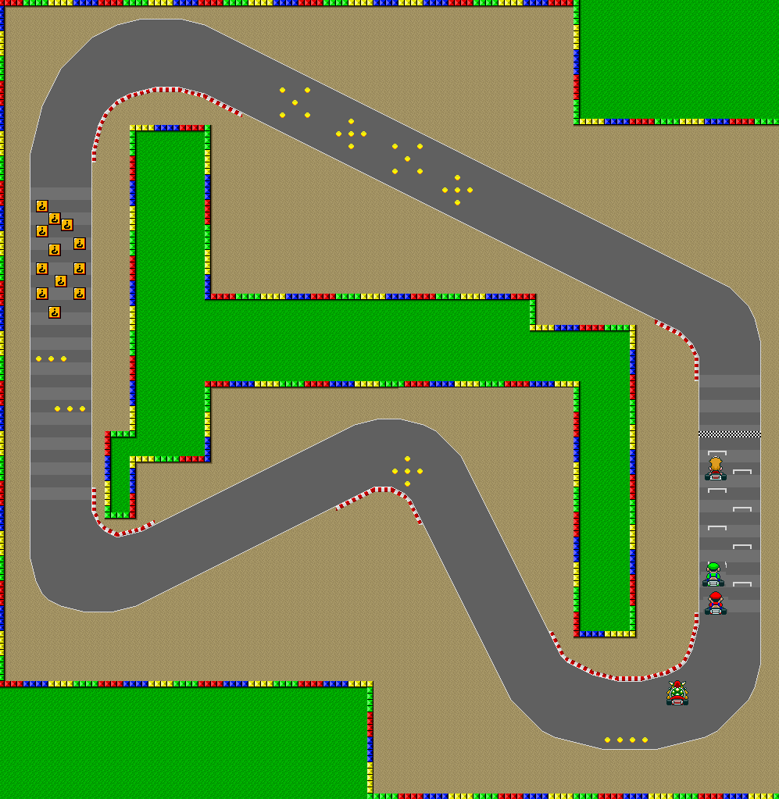

Project Overview

Mario Kart (C# Project) is a racing and betting game built using the .NET Framework. It features character selection, map selection, and multiple classic tracks such as Rainbow Road and Bowser’s Castle. Players can place bets, race, and manage their money while competing against AI-controlled racers. This project demonstrates my skills in C# programming, object-oriented design, and UI development.
Technical Implementation
Core Development
- C# and .NET Framework
- Object-Oriented Programming
- Race logic & AI pathing
- Betting & money transactions
- Sprite rendering & UI design
Game Features
- Character selection system
- Map and track selection
- Previous race history screen
- End game results screen
- Sound & font management
Development Process
- Modular screen design (Start, Game, End)
- Refactoring for cleaner structure
- Version Control with Git
- Testing different race scenarios
- Custom track scripts for each course
Development Process
Created the base project, set up start and game screens, and implemented initial race logic with karts and pathing algorithms.
Built character select, map select, and end game views. Added money management, betting systems, and track-specific scripts.
Refactored code for clarity, tested race outcomes, and finalized the project with polish on UI, sounds, and multiple tracks.
Key Features & Skills Demonstrated
Game Logic
Implemented kart racing mechanics, AI pathfinding, and race finishing logic using C#.
UI Development
Built multiple interactive screens: Start, Character Select, Map Select, Game View, and End Game.
Systems Programming
Added money management, betting mechanics, and race history to extend gameplay depth.
Object-Oriented Design
Used encapsulation and modular managers for sound, fonts, money, and game logic for cleaner structure.
{kind=link}
{kind=link}
{kind=link}